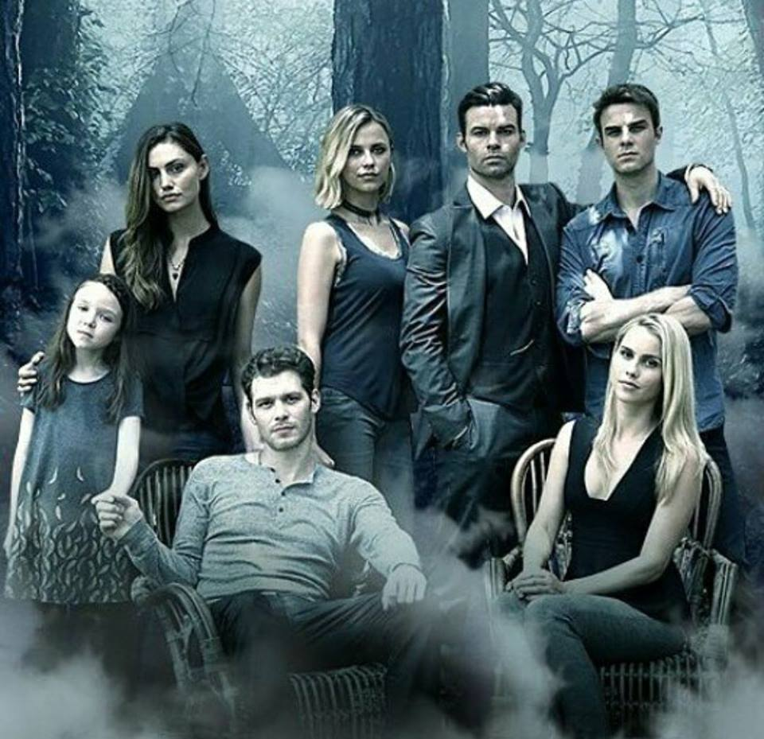
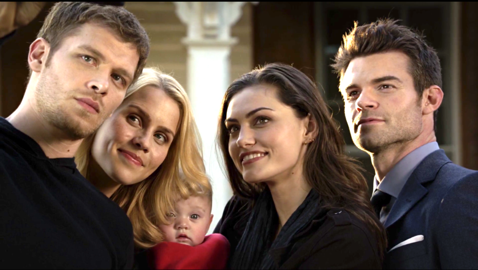

The Originals (conocido como Los Originales en español) es un spin-off de The Vampire Diaries que es producido The CW. El vigésimo episodio de la cuarta temporada de TVD, llamado The Originals, sirvió como piloto. La serie tuvo luz verde el 26 de abril de 2013. [1]
Las estrellas principales de la serie son Joseph Morgan como Klaus Mikaelson, Daniel Gillies como Elijah Mikaelson, Claire Holt como Rebekah Mikaelson, Phoebe Tonkin como Hayley Marshall y Charles Michael Davis como Marcel Gerard.
Siguiendo una pista misteriosa de que se está gestando un complot contra él, Klaus (Joseph Morgan) viaja a la ciudad que él y su familia ayudaron a construir: Nueva Orleans. La investigación de Klaus le lleva a un reencuentro con su antiguo protegido, Marcel (Charles Michael Davis), un vampiro que tiene el control total de los habitantes humanos y sobrenaturales de la ciudad. Decidido a ayudar a su hermano a encontrar la redención, Elijah (Daniel Gillies) va en busca de Klaus y pronto se entera de que Hayley (Phoebe Tonkin) también ha llegado al barrio francés en busca de pistas sobre su historia familiar, y ha caído en manos de una poderosa bruja llamada Sophie (Daniella Pineda), quien les revela algo que hace replantearse las cosas a Klaus y que puede volver a unir a su familia. Las tensiones entre las facciones sobrenaturales de la ciudad están a punto de romperse mientras Marcel gobierna con absoluto poder. Para Klaus, la idea de responder ante su poderoso protegido es impensable, y se compromete a recuperar lo que alguna vez fue suyo, por lo que junto a Elijah forman una difícil alianza con las brujas para asegurar que Nueva Orleans se regirá por Los Originales una vez más.
Klaus y Hayley deben mantener la farsa de la muerte de su hija mientras que, con la ayuda de Elijah, intentan retomar el control del barrio francés que les fue arrebatado por Francesca y su alianza con las brujas. Tras la muerte de Francesca, los lobos continúan bajo las órdenes de Esther, quien ha poseído el cuerpo de Cassie y traído de vuelta a Finn y Kol para ayudarla en su plan de purificar al resto de sus hijos para tener un nuevo comienzo como familia. Mientras tanto, Marcel intenta crear un nuevo ejército de vampiros para tomar la ciudad y Davina busca la manera de crear un hechizo que le permita separar a Marcel y Josh del linaje de Klaus para así poder utilizar a Mikael para asesinarlo.
Con la llegada a Nueva Orleans de Lucien Castle, el primer vampiro convertido por Klaus, los Mikaelson reciben la advertencia de una profecía sobre la destrucción de su familia, uno por un amigo; uno por un enemigo, y uno por la familia y la noticia de que aquellos a quienes han engendrado se preparan para entrar en una guerra para proteger a su creador. Así mismo, Tristán de Martel llega a la ciudad junto a una sociedad secreta de vampiros antiguos conocida como los Strix para cuidar de Elijah, su creador. Pronto, Elijah y Klaus comienzan a sospechar de las verdaderas intenciones de Tristán y Lucien y deciden hacer frente a la profecía por su cuenta, ayudados por Freya y Hayley; sin embargo, la llegada de Aurora de Martel -hermana de Tristán y expareja de Klaus- para proteger a Rebekah -su creadora- complica las cosas. Una vez que Rebekah es advertida sobre la profecía, sus hermanos le piden que abandone su búsqueda para revivir a Kol y se reúna con ella para poder defenderse juntos, sin embargo, Rebekah es localizada por Aurora y maldecida con la sed de sangre. Una vez de vuelta en Nueva Orleans, Freya intenta parar la maldición, pero falla, y es cuando Rebekah le pide a Elijah que le clave una daga y cumpla la parte de la profecía que habla sobre la familia para que no tenga que preocuparse de ser traicionado por Klaus.